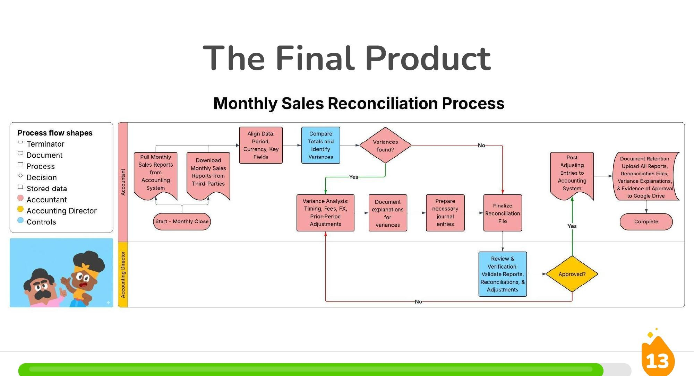

AI Prototyping · Data Integrity · Ethical Documentation
I'm a rising fourth year at the University of Virginia studying Economics with minors in Commerce and Environmental Sciences. I fill my time with plenty of other adventures outside of the classroom: I've built and deployed AI agents at Fortune 500 companies, devised expansion strategies for nonprofits, directed musicals, sung opera with the Cleveland Orchestra, and maintained a 2,100+ day streak on Duolingo. Some of my favorite experiences have been navigating AI usage and automations inside highly regulated environments to give stakeholders time to focus on creativity. Down the road, I'd love to guide organizations through automating their complex processes while making sure they're managing the risks that come with it.
A few projects that illustrate how I approach AI-assisted work. Click any project to read more.

View Full Submission (PDF)Reviewed a written walkthrough of a monthly financial reconciliation process and mapped it into a swimlane flowchart — identifying actors, systems, decision points, and document-retention requirements. Used Gemini for language editing, Lucidchart AI for layout, and an AI image tool for illustration, then documented every AI tool used in a dedicated “AI Disclosure” section.
Designed and deployed a Claude Code skill and prompt template that reviews 60+ financial reports each quarter, cross-referencing them against control descriptions and source parameters to flag potential issues using a consistent set of criteria before they reach quarterly financial statements. (Outputs are confidential; diagram above shows the general approach.)
Designed, trained, and deployed a Copilot-based AI agent that indexes Internal Audit standards, procedures, and policy documentation, letting 170+ auditors ask natural-language questions about department practices on demand. Also built the prompt library and rollout plan used to train the department on the new tool.
Used Claude Code to combine demographic, economic, and geographic data to identify promising new restaurant locations (Waffle House) in Southwest Virginia — an end-to-end example of using generative AI to turn raw data into a concrete recommendation.
As part of a five-person consulting team, helped design and run a 55-student survey (UVA, Georgetown, Syracuse, Elon, Penn State) on early-career job preferences, then synthesized the results into a talent-acquisition strategy for Waffle House: most students prioritize salary and career growth, yet 71% said they wouldn't consider a restaurant management role based on their current perception of it — even though it can pay $100k+. I led the data-driven site-selection piece for Southwest Virginia, scoring candidate locations (Christiansburg/Virginia Tech, a second Charlottesville site near UVA, and Radford) against population, traffic, retail/hotel density, and college proximity to recommend expansion sites.
Examples of independent research and public-facing writing.
Opinion column, The Cavalier Daily (2024)
Scholarship essay connecting economic cycles and music theory ($5,000 scholarship recipient)
AI-assisted research on the cost, revenue, and sustainability case for domestic matcha production